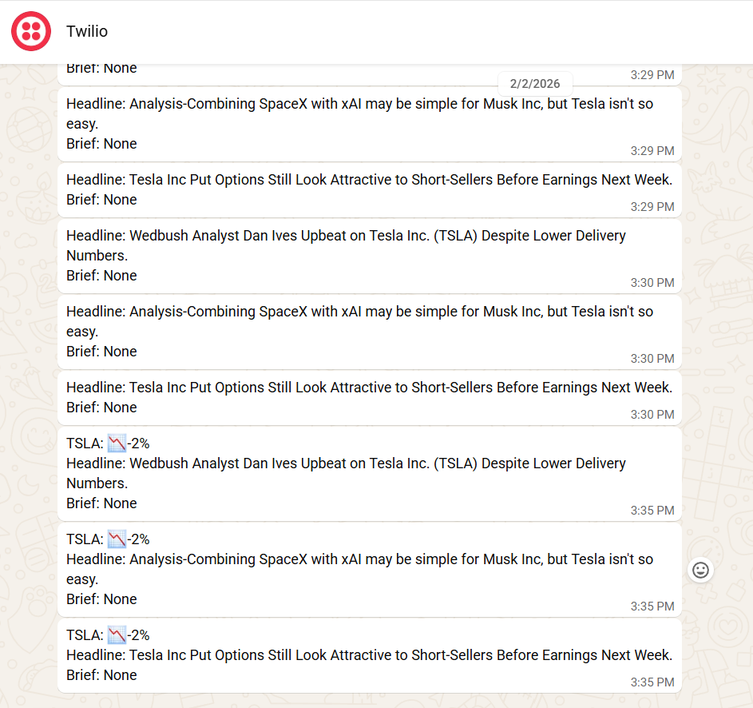
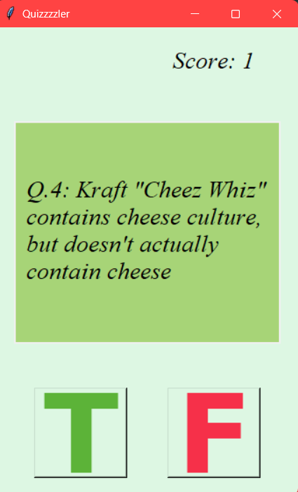
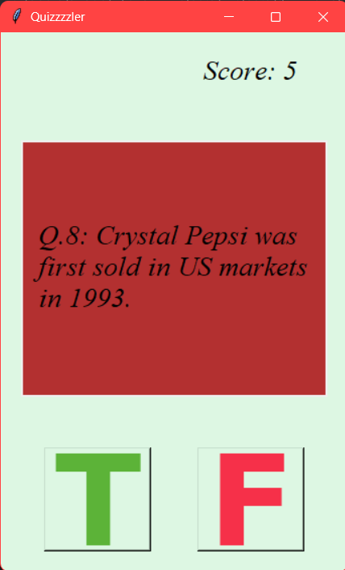
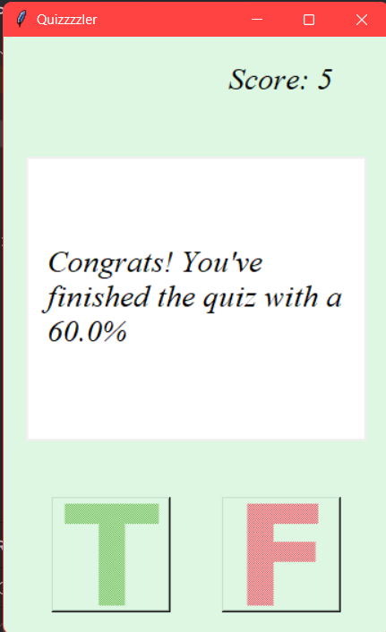
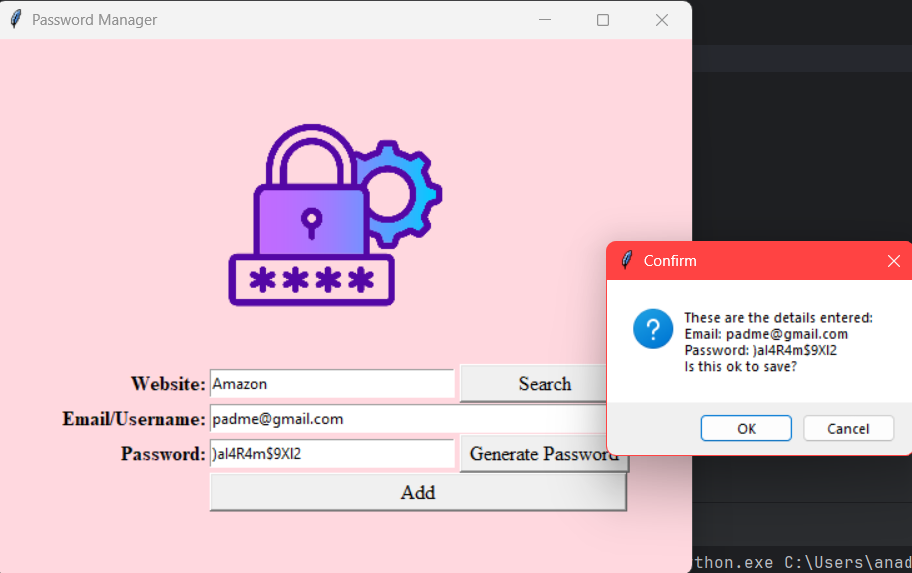
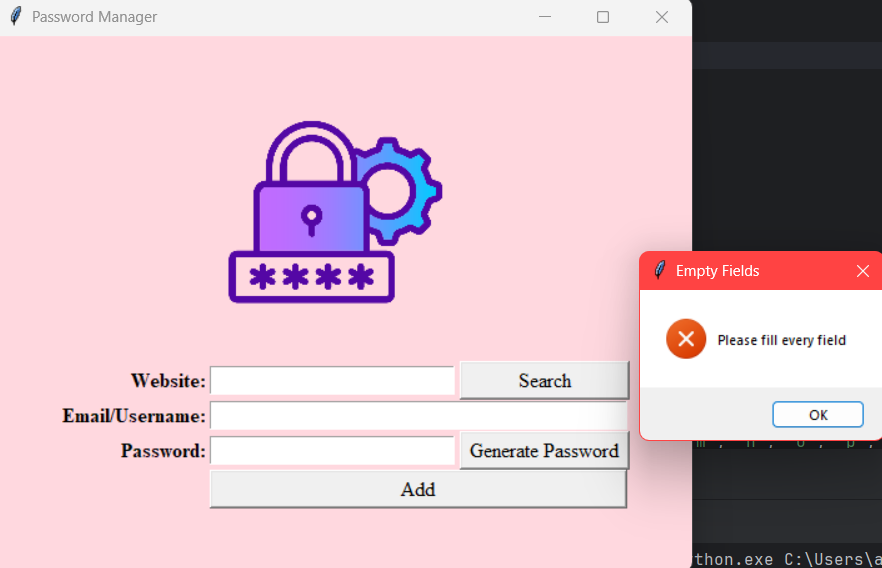
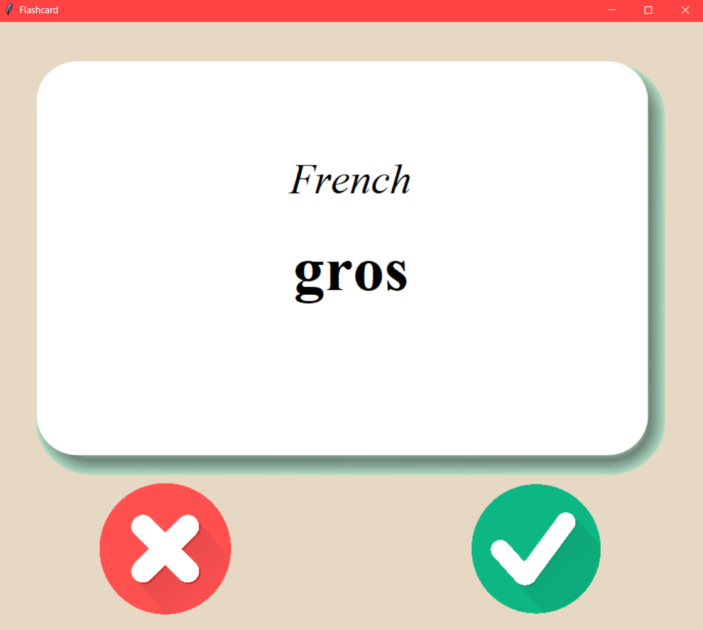
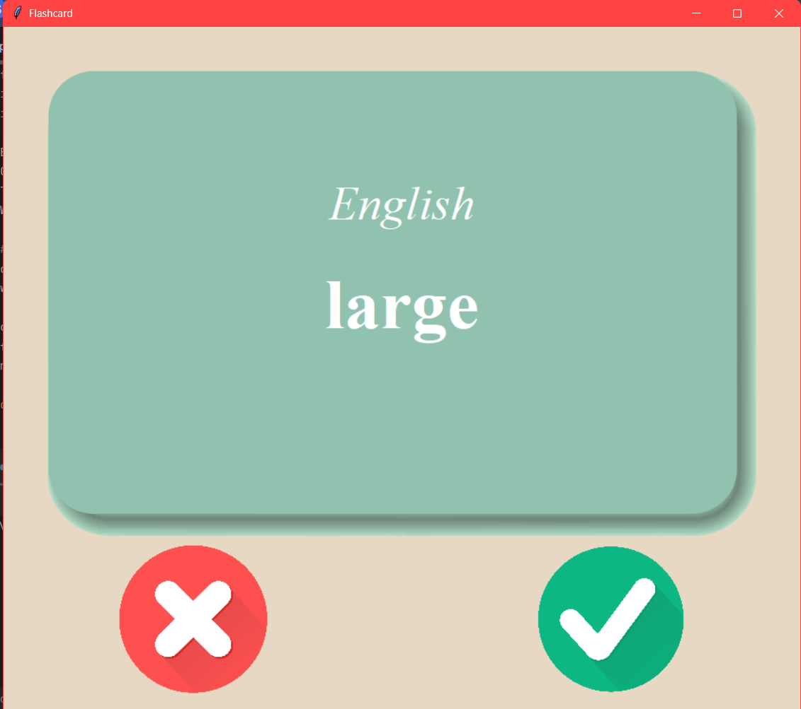

⚙️Web Application Optimization⚙️
Software Engineering Project
Modernized a legacy Java web application using test-driven development practices. Expanded automated testing coverage, improved code maintainability, and refactored complex components while preserving existing functionality.
Tech: Java • JUnit • TDD • Software Testing

💻Financial Intelligence Dashboard💻
Hackathon Project | Team of 4
Built a full-stack financial dashboard with interactive stock visualizations, user authentication, and real-time market/news integrations. Connected a Flask backend with financial APIs and ML-based risk analysis to deliver actionable insights.
Tech: JavaScript • HTML/CSS • Flask • Firebase • APIs • Machine Learning

🔥Wildfire Prediction System🔥
Software Engineering Project | Raytheon Collaboration
Led a 6-person engineering team to build a wildfire data pipeline supporting predictive modeling and geospatial visualization. Managed project execution while developing workflows to clean, standardize, and prepare large-scale wildfire datasets.
Tech: Python • SQL • Data Engineering • Geospatial Data

📊Sustainability Impact Analysis📊
Data Analytics Project | Intel Collaboration
Analyzed 600K+ device records using SQL to measure Intel’s 2024 sustainability impact. Built data pipelines, engineered segmentation features, and developed KPI analyses to identify energy savings, CO₂ reduction, and regional/device trends.
Tech: SQL • CTEs • Window Functions • Data Analytics

🎤Grammy.com Traffic Analysis🎤
Data Analytics Project | The Grammys Collaboration
Developed a Python analytics pipeline to analyze Grammy.com visitor behavior and uncover engagement trends. Created visualizations and KPIs to compare awards-night traffic patterns with baseline activity and validate insights across datasets.
Tech: Python • Pandas • Matplotlib • Data Visualization

📲Automated Financial Alert System📲
Personal Software Project | FinTech Integration
Engineered an event-driven data pipeline to track daily stock volatility and automate contextual breaking news delivery. Developed algorithmic workflows to ingest market data, compute price deltas, and broadcast real-time, structured briefs via cloud communication APIs.
Tech: Python • REST APIs • JSON Parsing • Twilio SDK • Automation

💡Interactive GUI Trivia Application💡
Personal Software Project | Desktop Application
Developed an asynchronous Object-Oriented quiz application utilizing Python's Tkinter framework for a responsive, interactive graphical user interface. Engineered an automated content pipeline to consume external REST APIs via requests, dynamically unescaping HTML entities to inject real-time trivia data seamlessly into customized desktop canvas layouts.
Tech: Python • Tkinter (GUI) • OOP • REST APIs • Data Parsing



🔒Desktop Password Manager & Vault🔒
Personal Software Project | Desktop Application
Developed a secure local credential management application featuring a Tkinter-based interactive GUI. Engineered file handling systems with built-in exception handling to query, create, and append encrypted relational data structures within flat-file JSON storage, alongside a multi-factor algorithmic password generator.
Tech: Python • Tkinter (GUI) • File I/O & Exception Handling • JSON Storage • Automation


🃏Language Acquisition Flashcard Application🃏
Personal Software Project | Desktop Application
Developed an interactive, asynchronous language-learning application featuring a custom Tkinter GUI layout. Built an automated data pipeline using pandas to ingest multi-language CSV datasets, converting them into structured relational dictionaries to feed an algorithmic random-selection engine. Designed and implemented event-driven timer loops using Python’s window mainloop to handle dynamic UI state changes, layout updates, and sequential asynchronous flashcard flips.
Tech: Python • Tkinter (GUI) • Data Science / Data Pipelines (pandas) • Event-Driven Programming • File I/O


Want to see more?
I strongly encourage you to check out my GitHub! That's where you'll be able to see all my independent programming projects and learning journey. 😉